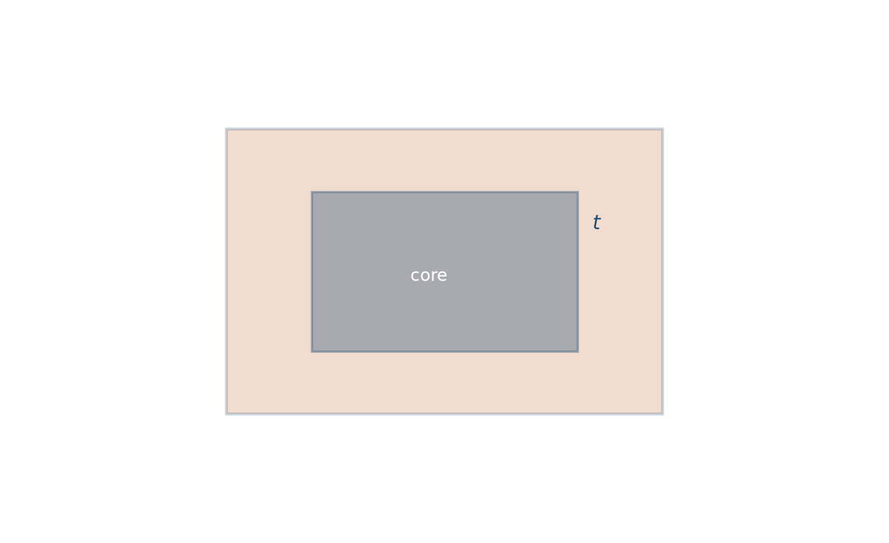
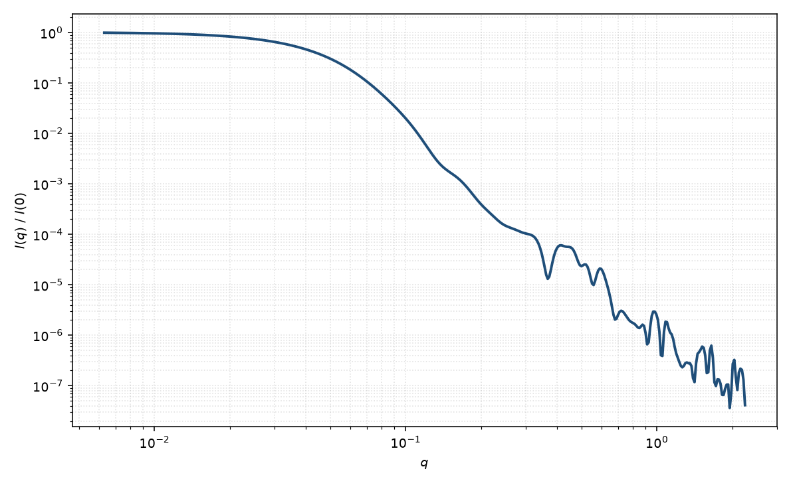

核壳平行六面体
core-shell parallelepiped
适用场景
核是边长 $A_c,B_c,C_c$ 的均匀砖块，外包厚度 $t$ 的均匀壳（外壳边长 $A_c+2t$ 等）。适用于表面配体/氧化物层的立方纳米晶、核壳钙钛矿砖块、以及对比变分后仍需两段矩形剖面的胶体。
核衬度匹配溶剂时接近空心矩形棱柱；壳衬度匹配溶剂时回到均匀平行六面体。薄壳且 $t$ 远小于最短边时，可再与薄壁空心极限对照。
壳厚、核边长与两段衬度高度相关。面选择性包覆（只盖一部分晶面）不是本模型。
物理图像
振幅是两块同心砖块形式因子的衬度加权差：外壳相对溶剂，加上核相对壳。取向平均与均匀平行六面体相同。中等 $q$ 的干涉来自核–壳界面。
本页用各边外扩 $t$ 的相似壳（不是共焦椭球那种 $R^2+t^2$）。若实验上壳沿法向等厚，在棱处外壳并不是严格平行六面体，这是几何近似。
示意图


核心公式
出发点
稀释粒子的相干散射振幅是衬度对平面波相位的体积分
$$F(\mathbf{q})=\int \bigl[\rho(\mathbf{r})-\rho_{\mathrm{solv}}\bigr]\,\mathrm{e}^{i\mathbf{q}\cdot\mathbf{r}}\,\mathrm{d}^3r.$$核、壳取分段常数：核砖块边长 $A_c,B_c,C_c$ 内为 $\rho_c$，核与外壳之间为 $\rho_s$。傅里叶变换对体积可加。
推导
均匀砖块归一化振幅是三轴 $\mathrm{sinc}$ 之积（$\mathrm{sinc}\,x=\sin x/x$）
$$F(A,B,C;\mathbf{q})=\mathrm{sinc}\!\left(\frac{q_x A}{2}\right)\mathrm{sinc}\!\left(\frac{q_y B}{2}\right)\mathrm{sinc}\!\left(\frac{q_z C}{2}\right),\qquad V=ABC.$$写成“外壳相对溶剂”加“核相对壳”。外壳边长 $A_s=A_c+2t$ 等（各面外扩 $t$，不是共焦椭球的 $R^2+t^2$）。于是
$$A(\mathbf{q})=(\rho_c-\rho_s)V_c F_c+(\rho_s-\rho_{\mathrm{solv}})V_s F_s.$$$A(\mathbf{0})=(\rho_c-\rho_s)V_c+(\rho_s-\rho_{\mathrm{solv}})V_s$。粉末平均 $P(q)=\langle|A|^2\rangle/|A(\mathbf{0})|^2$。稀溶液 $I(q)=n\langle|A|^2\rangle+B$。
低 $q$ 与渐近
均匀砖块 $R_g^2=(A^2+B^2+C^2)/12$。核、壳共心，复合回转半径是衬度加权二阶矩
$$R_g^2=\frac{(\rho_c-\rho_s)V_c R_{g,\mathrm{c}}^2+(\rho_s-\rho_{\mathrm{solv}})V_s R_{g,\mathrm{s}}^2}{(\rho_c-\rho_s)V_c+(\rho_s-\rho_{\mathrm{solv}})V_s}.$$$\rho_s=\rho_c$ 或 $t\to 0$ 回到均匀平行六面体。Guinier 指数形式在 $qR_g\lesssim 1$ 可用。
中等 $q$ 的肩峰或极小位移来自核–壳 $\mathrm{sinc}$ 干涉。大 $q$ 尖锐界面包络仍是 Porod $q^{-4}$；拍频反映内外两套边长。
参数表
| 参数 | 符号 | 含义 | 单位 | 典型范围 |
|---|---|---|---|---|
| 核边长 | $A_c,B_c,C_c$ | 均匀核三棱全长 | Å 或 nm | 10–800 Å |
| 壳厚 | $t$ | 各面外扩厚度 | Å 或 nm | 2–60 Å |
| 核 / 壳 / 溶剂 SLD | $\rho_c,\rho_s,\rho_{\mathrm{solv}}$ | 三段散射长度密度 | Å$^{-2}$ | 组成与对比决定 |
| 取向角 | $\theta,\phi$ | 棱取向（二维） | 度 | 由取向分布约束 |
| 标度 / 本底 | $n$, $B$ | 数密度与本底 | 与强度单位一致 | 实验相关 |
拟合注意
衬度比与 $t$ 是主简并。优先固定 $\rho$，只放几何；核边长多分散与壳厚竞争。空心极限把 $\rho_c$ 设为溶剂，不要再放核尺寸。
取向与磁性同均匀砖块：二维需 $\theta,\phi$；磁壳/死层与核 SLD 分通道。
相近模型
参考文献
- Mittelbach, P.; Porod, G. Zur Röntgenkleinwinkelstreuung verdünnter kolloider Systeme. VII. Acta Phys. Austriaca 1961, 14, 185–211.
- Pedersen, J. S. Analysis of small-angle scattering data from colloids and polymer solutions: modeling and least-squares fitting. J. Appl. Cryst. 1997, 30, 339–354. DOI: 10.1107/S0021889897002532